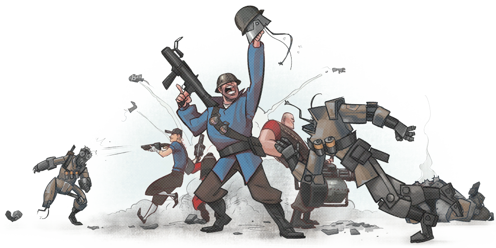
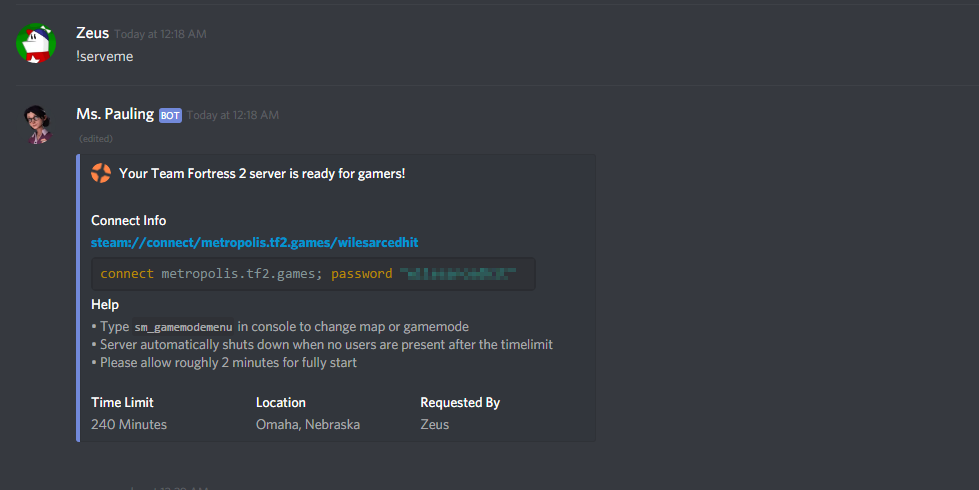
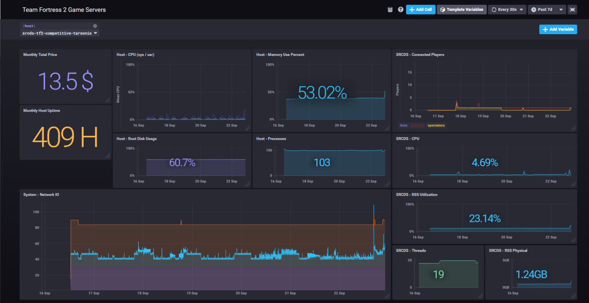

How did I start doing this?
I originally started programming and doing computer stuff way back in 2009; the end of high school. I had played a lot of Diablo II at the time; and in that game, to be 'godly' you needed to get a lot of high tier items. Doing that was a super grind.
I had done a few things to try to "strike it rich". What I finally realized is that the botter's had it right. Automate the boring stuff and focus on what you want to do. And that's what I did!
I downloaded the D2NT bot and started picking it apart. I didn't know anything about programming or software really. I watched a few tutorials on the basics of Javascript (the embedded language the bot used to control it's actions). I didn't really understand the impact of changes I made so I made a LOT of mistakes and was forced to learn how the rest of it worked. This is where I learned to debug code as well; since most of what was there was code I personally didn't write.
I did a bunch of mini projects with this botting software. One of them was a rush bot; that basically (100% automatically) went through all the quests in the game for a low level character; something that used to be very manual and time consuming. This meant I could offer it as a service and actually scale it out.
Everyone should be doing this!
It feels sooo good when you complete a project like that and it makes it so you almost don't have to do anything. Not only that; but even with something small like that; I learned a TON about how computers worked. I feel very strongly that the best way to learn CS is to partake in small but not dumb projects; make it something you actually care about and can have something tangible that you use after you're done. Something you personally would actually want to use.
I have continued doing this ever since. So lets talk about my latest venture...
My Team Fortress 2 server automation project

Easily my favorite game of all time is Team Fortress 2, I love this game so much, I could probably write an entire book on what TF2 does right.
So I have all these computer skills now; and one of the awesome things about Valve is they allow you to run your own servers! Not only that but there is a deep history of people modding the source engine for various things. Infact Valve literally released an SDK that exposes a lot of power to modders.
There's no way I'm not using my computer skills to make all of this stuff awesome. Basically this project is solving the problem that; I want as close to a self service competitive TF2 server than I can get.
Just for some context; I play on multiple competitive teams, and servers are CONSTANT pain for teams. I tried the "cheap" hosting solutions that most people do; I was super unhappy with what I got.
Requirements
So lets talk features... What problems am I solving and generally what do I do to solve it?
Problem: Getting a "configured" server from a hosting provider is expensive and clunky
- Run servers in your own cloud!
- Have all the custom maps and plugins needed preloaded on the server, no extra configuring required
Problem: Running servers 24/7 is expensive and unnecessary
- Make it easy for users to provision servers on an ad-hoc basis
- We still want people to be able to have a server when they need it
- Servers will shut themselves down when no longer in use.
- Installing monitoring software to optimize hardware and actual usage
Problem: Configuring servers is slow; even when automated
- Do this once and be able to deploy a LOT of identically configured systems
- Follow the idea of a baked image
- Allow server to come up with a few dynamic details (passwords, hostname, etc)
Problem: Sometimes multiple people want a server at the same time
- The ability to ask for servers ad-hoc means that I can host many servers at once and it would still be cheaper than running a single server 24/7 so long as they don't run ALL the time
- Allow users to self service. Give them a simple menu to set the map, config, and item whitelist
Problem: Players like to understand their in-game performance
- Record and upload player stats and game recordings to known sites (Demos.tf & Logs.tf)
- Some leagues also require recordings, so this makes it certain you will have a high quality copy of the match
Problem: Servers get hacked or DDoS'd
- Do basic sever hardening (no ssh access, lock down source process, use random passwords, etc)
- Put it in a network that has a high degree of fault tolerance
- Put up stateful firewalls to block script kiddies
- Set up kernel flags to mitigate common DoS attacks
- Monitoring system should alert when events like this happen
- Be able to just make a new server so now the hacker has to find all that info again
Problem: Writing web UI's is time consuming and requires users to go a website
- Integrate with chat services (Discord) or be where players congregate the most
- Basically, bring the solution to where users already are
The result...
What I have now is the ability to summon a fully configured Team Fortress 2 server that I don't even need to be around to allow games to happen on.
Ansible
Basically I'm creating bootable images that can be turned into VM's very quickly. This uses a tool I already know from working as a System Administrator; Ansible. Using this technique makes it so I can boot a virtual machine get a working TF2 in ~2 minutes; which is remarkably fast, plus most users are quite happy to wait if it means a well configured high performance server they can frag on. These servers are setup to gracefully shutdown when no one is using it anymore.
Source code: scrims-tf/provisioners
Discord Bot integration
I go a step further to enabling my Discord bot to respond to requests for a server. Not only that but it will give the user very useful information about the server and how to use it. Putting the docs right in front of them. Of course I'm using my own Discord bot library for this.

Source code: scrims-tf/discord-bot-plugins
Monitoring
Not only that; but it also automatically sends data to my monitoring stack

My monitoring stack will send me alerts (also in Discord) when..
- High player count
- High network bandwidth
- High CPU / RAM usage
- Server is older than a threshold (why is it hanging??)
I can now also pull data out of my monitoring to optimize cost or understand how my servers operate.
I also really should automate creating my monitoring...
Supporting Infrastructure
Not only that; but I went even further as to automate the actual network the systems live in. This allowed me to work with a new tool Terraform. This means that I can make lots of changes to all of this very easily. Basically able to re-create all of this if I want (say if I want to use Google's free trial over and over).
Source code: scrims-tf/infrastructure
I decided to put this on Google's cloud network. Mostly because I wanted to get my hands on and see if my distaste for AWS was because Amazon sucks and is the grass greener on the other side. So far, I've had a very positive experience with GCP, though some features are lacking like VPC-enabled databases. A side effect I didn't expect is that putting it on Google's network has lowered user ping on average for the players of the server. This is because Google has highly optimized their networks to enter their backbone much closer to the player's location; avoid a lot of the suboptimal routing that ISP's do with BGP.
Custom Server Mods
I've had to also write a handful of mods for the server to allow some of this to happen. I do have to say that I'm thoroughly impressed by the modding community. A group of volunteers have been able to embed a working Python3.6 interpreter into the Source Engine, AND it doesn't suffer from a lot of the slowness usually associated with interpreted languages.
Source code: scrims-tf/sourcemod-plugins and scrims-tf/sourcepython-plugins
Future Plans
Automate more things! I want to play with the idea of extending the player stats logging to include not only more information but way more advanced ability to view that information. Maybe even work with some of my data science friends to derive cool insights. Player progression over time and maybe even something like an MMR or try to guess their skill division.
I also want to play with the idea of having the SourceTV camera directed by machine learning. How awesome would it be to have a computer know and show you where the big moments are. Basically can follow the action in the game so viewers can just sit back and watch as if a crew was doing all of it.
Add some feature to make the "pick up game" (pug) experience better. MMR for players to try to balance teams. Ability to just randomize teams. Ability to have a 2 captains pick players and assign them to teams.
Offer this as a cheap paid service for the Team Fortress community in general. Not sure how much I would charge per month; not looking to get rich or anything; but make my hosting costs into nothing.